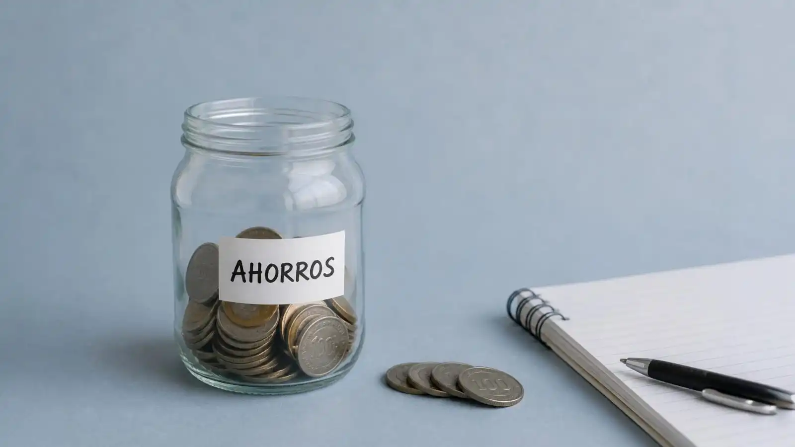

Por Francisco Urrego
Actualizado el 18 ene 2026 | 12:01 h
⏱ 5 min lectura

- 1. El camino hacia un ahorro real sin importar tu salario
- 2. Ahorra de los “momentos inesperados”, no del sueldo
- 3. Crea un mini–fondo de emergencia de $50.000 o $100.000
- 4. Ahorra con retos simples, no con presión
- 5. Cambia un gasto grande por una alternativa igual de buena
- 6. Ahorra lo que te ahorras
- 7. Define un gasto fijo mensual solo para caprichos
- 8. Usa la regla del “trueque moderno”
- 9. Cierra tu ciclo de ahorro con inteligencia
El camino hacia un ahorro real sin importar tu salario
Al ahorro no le importa si ganas o no dinero, si obtienes bajos ingresos o altos, incluso no le importa si estás feliz con lo que ganas o no. El dinero solo sigue lo que decides hacer con él; no porque le metas un dólar a tu alcancía él se enojará, y si no metes un centavo tampoco pasará nada al ahorro ni al dinero. La verdadera repercusión o felicidad vienen para ti.
En este apartado, no tendremos en cuenta cuánto ganas, sino cómo manejas tu dinero. Incluso si tu ingreso mensual es bajo, con las ideas correctas puedes empezar a generar ahorro real y sentir más control sobre tu economía. En esta guía, te muestro cómo ahorrar paso a paso, sin sentir que estás sacrificando la última gota de sudor.
Antes de pensar en “ganar más”, es fundamental entender dónde estás parado en este momento. Identificar tu realidad financiera te ayudará a tomar mejores decisiones y ver qué realmente ocurre.
Analicemos esto detenidamente
- Ganas poco si: después de cubrir tus necesidades básicas (arriendo, alimentación, transporte y servicios), te queda muy poco o nada para gastos extras o ahorro.
- Ganas más del promedio si: puedes cubrir tus necesidades, ahorrar cada mes y aún te sobra dinero para ocio o inversiones.
Importante: muchas personas creen que ganar más es la solución a sus problemas financieros, cuando en realidad ya tienen la base económica perfecta para empezar a crecer si ajustan hábitos y planifican correctamente sus gastos.
Tip extra: antes de buscar más ingresos, revisa tu flujo actual. A veces, con disciplina y orden, tu dinero puede rendir mucho más que aumentando el salario.
Ahorra de los “momentos inesperados”, no del sueldo
Este párrafo tiene un sentido muy apropiado para el ahorro, ya que no apunta a ahorrar sacando el dinero directamente del sueldo, sino que invita al lector a ahorrar mediante otros medios del mismo dinero que puede llegar a tener.
Siendo así, muchos sienten que no pueden ahorrar de su salario porque cada peso ya tiene destino, ya tienen una ruta trazada semejante a esto: arriendo, servicios, comida, o sea… y a fin de mes parece que no quedó nada y es verdad, a este ritmo no quedará nada jamás. La buena noticia es que no siempre tienes que tocar tu sueldo para empezar a ahorrar y quiero proponerte ideas clave que te servirán aquí y ahora.
La clave principal está en aprovechar los ingresos que llegan de forma inesperada. No afectan tu presupuesto y, si los guardas, pueden crecer rápido sin que sean perceptibles.
Ejemplos directos de dinero inesperado:
- Vueltas mal devueltas al pagar con efectivo.
- Devoluciones de compras o reembolsos que no esperabas.
- Premios, rifas o bonos ocasionales.
- Dinero que encuentras o que te pagan de más por un servicio.
- Propinas o trabajos improvisados.
Regla clave: Guarda todo ese dinero inesperado, ya que no lo esperabas; así que no te duele apartarlo. Para ti no existe, para tu alcancía sí. Este tipo de ahorro crece rápido y te permite construir un colchón sin tocar tu sueldo mensual.
Crea un mini fondo de emergencia de $50.000 o $100.000
Nada de metas imposibles. Si tus ingresos son bajos, lo importante es comenzar con objetivos pequeños y alcanzables que te permitan sentir progreso real y motivarte a continuar. Un mini fondo de emergencia no solo te da tranquilidad ante imprevistos, sino que te enseña a crear disciplina financiera desde el inicio.
$50.000 (primer nivel) – Ideal para cubrir imprevistos pequeños, como un transporte adicional o un gasto de última hora.
$100.000 (segundo nivel) – Te permite enfrentar emergencias un poco más grandes, como reparar un electrodoméstico o cubrir un gasto médico menor.
$150.000 (tercer nivel) – Brinda una seguridad real, generando confianza para manejar tu dinero sin estrés.
Importante: estos primeros niveles funcionan como impulso inicial: cuando los logras, tu motivación crece, el ahorro deja de sentirse imposible y empiezas a construir un hábito financiero sólido. Lo más importante es comenzar, aunque sea con montos pequeños, porque cada peso ahorrado suma y fortalece tu independencia económica.
Ahorra con retos simples, no con presión
Ahorrar “por obligación” se siente… pesado, ¿no? Como que te aprieta el pecho y terminas dejando la idea a la mitad. La verdad, hay una forma más sencilla y hasta entretenida de hacerlo: convertir el ahorro en un juego con retos que realmente puedes cumplir sin sentir que estás sufriendo.
- Reto de los sobres separa el dinero en sobres según para qué lo quieres, y así nunca te pasas.
- Reto de los números del 1 al 30 guardas lo que indica el número del día, sí, suena raro, pero funciona.
- Reto de los antojos cada vez que te das un gusto, guarda lo mismo en tu ahorro.
- Reto del billete de $5.000 cada que llegue a tus manos, no lo gastes, guárdalo.
Lo bueno de estos retos es que no sientes que estás renunciando a nada. Más bien, de repente el hábito se vuelve divertido, casi automático, y ni cuenta te das que estás ahorrando de verdad.
Cambia un gasto grande por una alternativa igual de buena
Mira, identifica ese gasto fuerte del mes que más te duele: internet, comida, transporte, servicios públicos, celular, membresías, cursos… lo que sea. Ahora, la idea no es sufrir, sino buscar una alternativa más económica que te dé exactamente lo mismo. Cambiarte a otra empresa que ofrezca el mismo servicio puede ser un respiro enorme.
Lo que pasa muchas veces es que ni nos damos cuenta de que lo que cambia entre las opciones es solo la marca, el estatus o la publicidad, pero el servicio… al final del día, es igual de bueno y cuesta menos. Un solo cambio así puede liberar más dinero que estar recortando mil cosas pequeñas sin sentido.
Y sí, cada centavo cuenta, aunque parezca ridículo. Ese centavo, ese peso que guardas o que no gastas de más, con el tiempo y los intereses acumulados puede sorprenderte de verdad. No estoy diciendo que vivas como un miserable ni que te prives de todo, pero sí que ajustes tu manera de ver los gastos grandes. Porque si no lo haces, poco a poco, sin darte cuenta, te vas a ver en aprietos financieros y ni sabrás cómo llegaste allí.
Ahorra lo que te ahorras
Mira, en este caso, si encuentras un descuento o promoción, guarda la diferencia en tu ahorro. Por ejemplo: si algo costaba $40.000 y lo compraste por $28.000, guarda los $12.000 sobrantes, porque seguro que sin darte cuenta querrás gastarlos impulsivamente, pensando “bueno, me sobraron”.
Lo que pasa es que a veces uno se puede gastar hasta de más de ese restante sin notarlo. Un gasto pequeño termina llevando a otro, y así el problema se agrava sin que te des cuenta. La clave es detenerte y abandonar esa emoción en el momento, antes de que se te vaya de las manos.
Define un gasto fijo mensual solo para caprichos
Mira, en este caso no se trata de vivir con abstinencia total ni de sentirse privado, todo debe estar equilibrado para que no te rompas el esquema y termines abandonando la idea. Puedes asignar un monto pequeño, digamos entre $20.000 y $40.000, solo para gustos personales, ocio, paseo o lo que te interese en el momento. Aquí es donde sí puedes darle rienda suelta a tu impulso de comprar sin culpas.
Si te parece poco, no pasa nada: puedes ir ahorrando este dinero destinado a caprichos hasta que realmente quieras darte ese gusto. Así disfrutas sin desordenarte y, de paso, controlas el impulso de gastar más de lo que realmente quieres.
Usa la regla del “trueque moderno”
Muchas veces suele pasarnos que queremos algo que alguien tiene, pero esa persona quiere lo que tenemos; es parte de la naturaleza humana este comportamiento. Podemos usar esto como método para adquirir lo que necesitamos o deseamos. Antes de gastar dinero, pregunta si puedes intercambiar algo que ya no uses por lo que necesitas: ropa, herramientas, accesorios, cursos o incluso servicios.
Ahorra dinero obteniendo lo que necesitas sin pagar. Solemos pensar que todo debe adquirirse con dinero; a veces basta con intercambiar lo que no necesitamos o ya no queremos por algo que sí cumpla nuestras expectativas, pero que aún no tenemos. Por rechazo o miedo al qué dirán, no actuamos, sin saber que quizás la otra persona desea eso que tú tienes o se le antoja.
Cierra tu ciclo de ahorro con inteligencia
Mira, ahorrar incluso con ingresos bajos es totalmente posible cuando cambias la forma de tomar decisiones financieras. No hace falta hacer milagros ni privarte de todo; con pequeños ajustes, estrategias creativas y un enfoque inteligente, puedes crear estabilidad sin sacrificar tu calidad de vida.
La verdad es que cada hábito cuenta, aunque parezca mínimo, y si lo mantienes constante, tu dinero empezará a rendir mucho más de lo que imaginas. Créeme, ver esos resultados con el tiempo te da motivación y confianza para seguir mejorando.
Código Millonario recomienda: